Part 1.1
Convolutions from scratch
The code below uses four loops to compute the convolution of an image and kernel. We first flip the filter since convolution is defined as summation j summation k im[m - j][n - k] kernel[j][k], which means we flip the kernel across both the x and y dimensions. The outer two loops go through every location in the image, and the inner two loops go through every offset within the kernel to calculate the convolution.
The other implementation uses only two for loops, where we find the k x k patch around each image pixel, with k being the kernel size, and compute the sum of patch * flipped kernel using NumPy. We padded the borders with zeros so the kernel also works at the corners and edges. For our odd-sized kernels, we pad by (k - 1) / 2, which keeps the output the same size as the original image.
zero padding
import numpy as np
import skimage.io as skio
from scipy.signal import convolve2d
def pad_image(image, k):
p = (k - 1) // 2
return np.pad(image, p, mode='constant', constant_values=0)four loops
def convolution_4(image, kernel):
kernel = np.flip(kernel)
h, w = image.shape
image = pad_image(image, 9)
result_image = np.zeros((h, w))
for i in range(h):
for j in range(w):
for k in range(-4, 5):
for l in range(-4, 5):
result_image[i][j] += image[i + k + 4][j + l + 4] * kernel[k + 4][l + 4]
return result_imagetwo loops
def convolution_2(image, kernel):
kernel = np.flip(kernel)
h, w = image.shape
image = pad_image(image, 9)
result_image = np.zeros((h, w))
for row in range(h):
for col in range(w):
patch_matrix = image[row:row + 9, col:col + 9]
curr_matrix = np.sum(patch_matrix * kernel)
result_image[row][col] = curr_matrix
return result_imageOur results shown below match scipy.signal.convolve2d with the same zero padding. The runtime benchmarks show that the four-loop implementation takes about 5.9 seconds, the two-loop implementation takes about 0.53 seconds, and SciPy takes about 0.018 seconds. The two-loop implementation is faster because NumPy handles the multiplication and summation within each patch.
| filter | four loops | two loops | scipy |
|---|---|---|---|
| box | 5.864780 | 0.532263 | 0.017764 |
| dx | 5.905789 | 0.527948 | 0.017827 |
| dy | 5.867705 | 0.536544 | 0.017705 |
The 9 x 9 box filter averages the surrounding 81 pixels, which makes the image smoother. The D_x and D_y difference filters approximate the partial derivatives along the x and y axes, so they highlight edges where the image intensity changes quickly in each direction.
gray_img = skio.imread('input/part-1-far.jpg', as_gray = True)
box_filter = np.ones((9, 9)) / 81
d_x = np.zeros((9, 9))
d_y = np.zeros((9, 9))
d_x[4, 3:6] = [1, 0, -1]
d_y[3:6, 4] = [1, 0, -1]
four = convolution_4(gray_img, box_filter)
two = convolution_2(gray_img, box_filter)
reference = convolve2d(gray_img, box_filter, mode = 'same', boundary = 'fill', fillvalue = 0)
print(np.allclose(four, reference), np.allclose(two, reference))

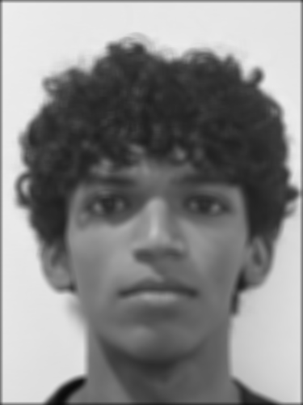

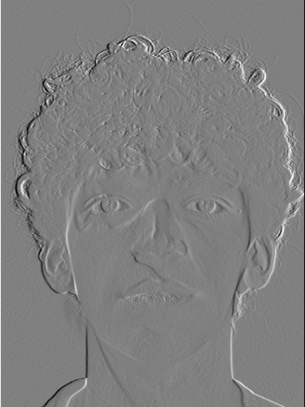

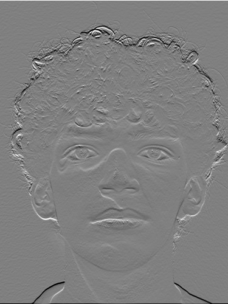

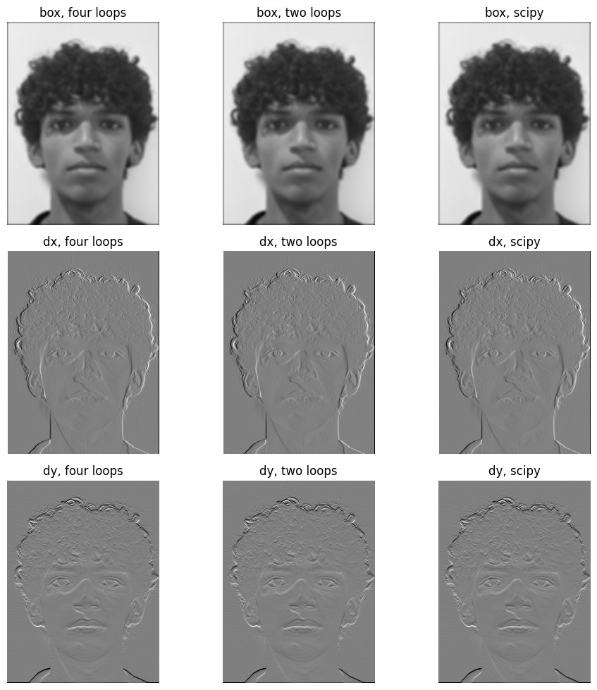
For the derivative images, zero is shown as middle gray, with negative values darker and positive values brighter. This is only for displaying the results.
Part 1.2
Finite differences
The derivative images along x and y show where the intensity changes quickly in each direction, which is usually where there’s an edge. An edge often separates a darker region from a brighter region, so the derivative has a large positive or negative value depending on the direction of the intensity change, whether we are going from dark to light or light to dark respectively. The gradient points in the direction where intensity increases the fastest.
The magnitude of the gradient is calculated using sqrt(dx ** 2 + dy ** 2) since the gradient is a vector [dx, dy]. This combines the changes in both directions into one value showing how strong the edge is.
The threshold we chose was 0.2 since at 0.1 and 0.15, the ground still had a lot of distracting detail. Keeping only gradient magnitudes above 0.2 preserves the stronger edges while removing many weaker responses in the grass. These weaker responses come from fine texture and small intensity variations, which can include noise. This makes the main edges clearer, although some weaker real edges are also removed.

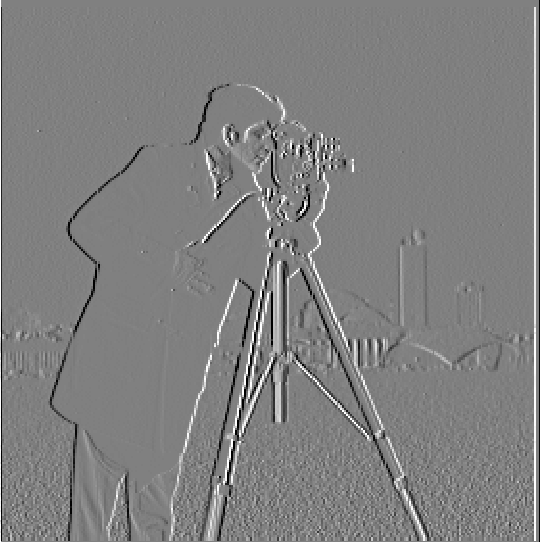

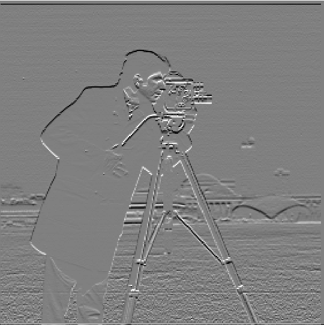

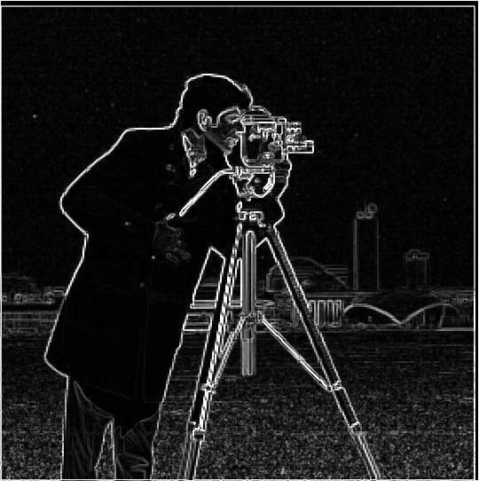

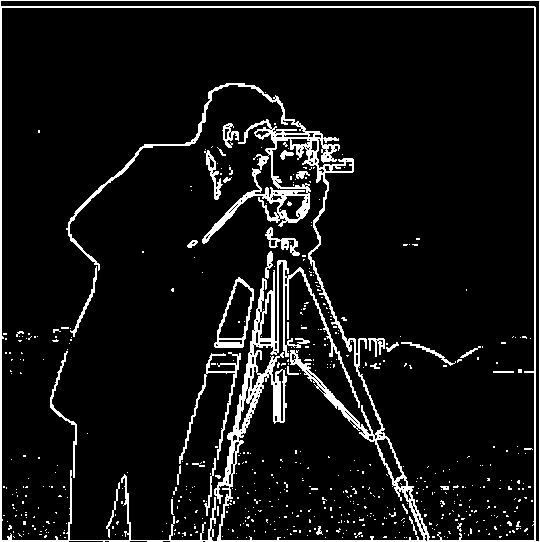

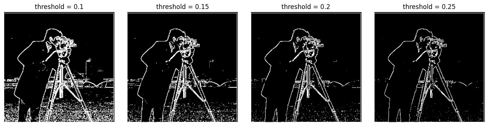
Part 1.3
Derivative of Gaussian
I constructed a 2D Gaussian by creating a 1D Gaussian of size K and multiplying it by its transpose, which creates a 2D Gaussian. My kernel size is 9 x 9 and sigma = 1. By applying a Gaussian on an image, we smooth the image, reducing high frequency noise and fine texture such as the little specks and lines we were seeing in the grass. Our result in 1.3 reduces the noisy detail seen in 1.2.
I constructed the DoG filters by using this idea of d_x * (g * f) becoming (d_x * g) * f since convolutions are associative. The same applies to d_y, so once we construct the filters, instead of applying 3 convolutions on the image, we only apply 2. This uses fewer convolutions, though the runtime also depends on the filter sizes. Smoothing and then differentiating and using the DoG directly give the same result apart from tiny floating point differences, and the thresholded images are identical.
I kept the full blurred image until after differentiating and then cropped it back to the original size, so both methods also match at the boundaries. The largest difference in gradient magnitude is about 1.17 x 10^-15. The DoG filters are 17 x 17 since I convolved the 9 x 9 Gaussian with the difference filters stored in 9 x 9 arrays using full convolution.
kernel_1d = cv2.getGaussianKernel(ksize = 9, sigma = 1)
kernel_2d = kernel_1d @ kernel_1d.T
derivative_x_gaussian = convolve2d(kernel_2d, d_x, mode = 'full')
derivative_y_gaussian = convolve2d(kernel_2d, d_y, mode = 'full')

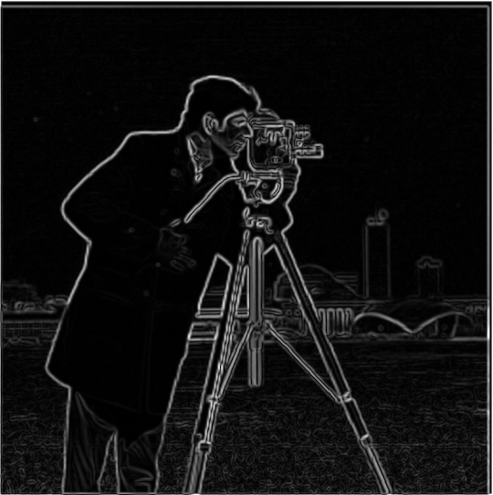

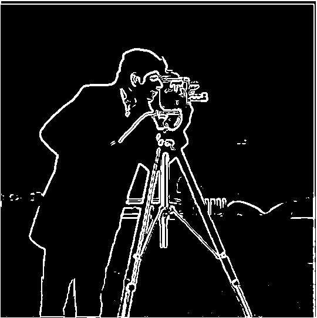

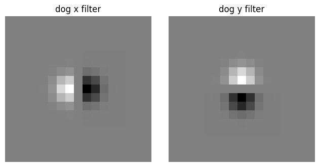

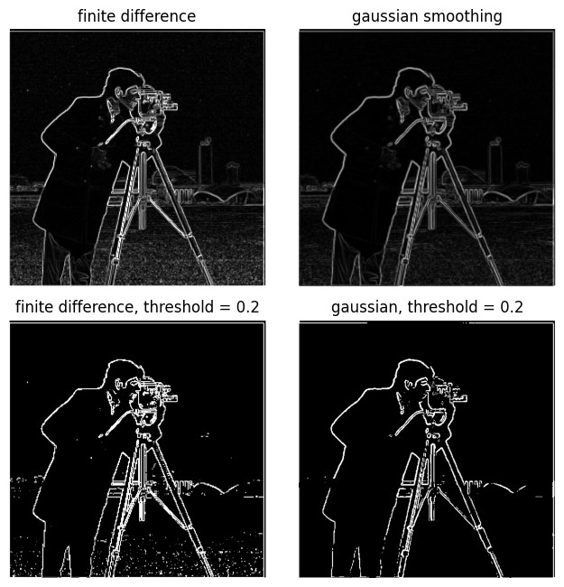

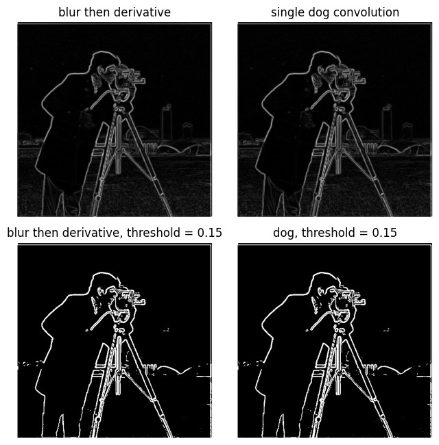
Part 2.1
Sharpening
A blurred image that was created by convolving with a Gaussian kernel is essentially the original image with less high frequency detail. Therefore, subtracting the blurred image from the original image gives us the high frequency detail since (high frequency + low frequency detail) - low frequency detail = high frequency detail. If we want to sharpen a blurry image, we usually want to emphasize the remaining high frequency detail, so we add alpha * high frequency detail to the image. The equation then becomes f + alpha * (f - g * f) = (1 + alpha) * f - alpha * (g * f) = f * ((1 + alpha) * e - alpha * g), where e is the impulse filter and * between filters and images means convolution. The sharpening filter then becomes (1 + alpha) * e - alpha * g.
By increasing alpha, we increase the strength of the high frequency parts of the image, but after increasing it too much, the image can start to look weird and different from the original. In the Taj Mahal image, increasing alpha makes the edges of the building stand out more, but larger values can also amplify noise and create halos around the edges. I used alpha = 2 and sigma = 1 for the Taj Mahal result.

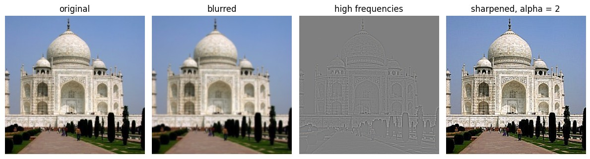

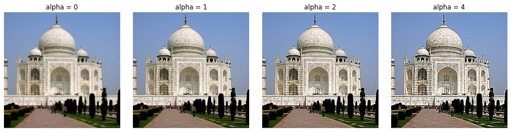
In the F-15 image, I used alpha = 1.5 and sigma = 2, which makes the edges of the wings and body stand out more. The image still looks a little blurry since the original image was already blurry, so sharpening cannot fully recover the missing detail. Increasing alpha further also makes the noise in the sky more noticeable, so a larger alpha does not necessarily make the image look better.

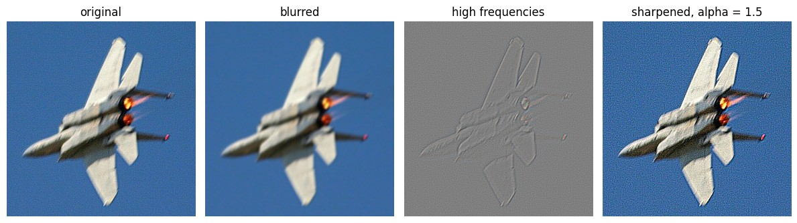

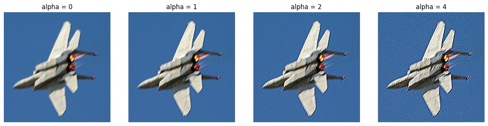
When we blur an image and then sharpen it again, it becomes sharper but does not become the same as the original image since sharpening emphasizes the detail that remains and does not fully recover the detail lost from blurring as shown below. I blurred the portrait using sigma = 2 and a 13 x 13 kernel, and then sharpened it using sigma = 1 and alpha = 2.

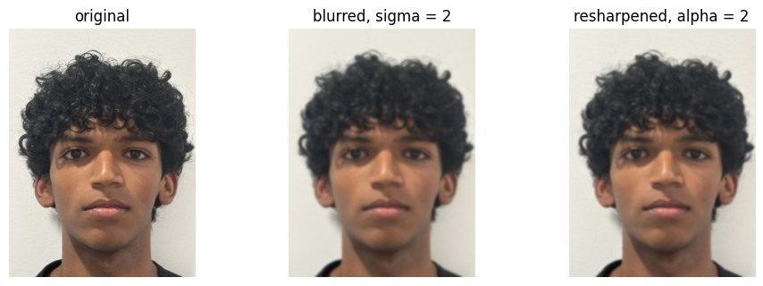
The high frequency images have 0.5 added for display, so zero is middle gray. This offset is not added when computing the sharpened image.
Part 2.2
Hybrid images
A hybrid image is essentially the low frequency detail of one image added to the high frequency detail of another image. We get the low frequency detail by convolving the first image with a Gaussian, and we get the high frequency detail by subtracting the blurred second image from the second image. Therefore, the result becomes g_low * im1 + (im2 - g_high * im2). When we look at the image up close, we can see the high frequency detail more clearly, and when we look farther away, the low frequency image becomes more noticeable.
Derek and Nutmeg
For Derek and Nutmeg, I used the provided images since both have facial features that we can align. I aligned their eyes using the starter code, which shifts, scales, and rotates the images, and then cropped both images to the same area. Derek supplies the low frequency detail with sigma = 5, and Nutmeg supplies the high frequency detail with sigma = 2. Up close, we can see Nutmeg’s fur, eyes, and whiskers, while farther away, we can see Derek’s face more clearly. However, their face shapes are different, so parts of Derek’s hair and Nutmeg’s ears are still visible together.


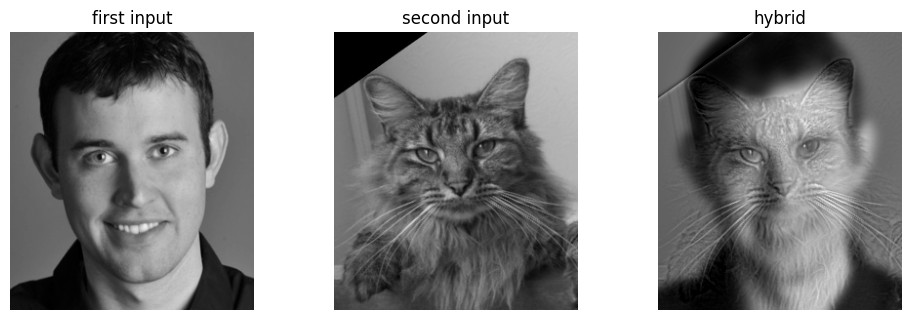
Basketball and Death Star
For basketball and Death Star, I chose these images since both are round, but the basketball has large dark seams while the Death Star has a lot of small surface detail. I cropped the spheres and resized them to the same diameter, and then centered both on white 400 x 400 images. The basketball supplies the low frequency detail, and the Death Star supplies the high frequency detail.

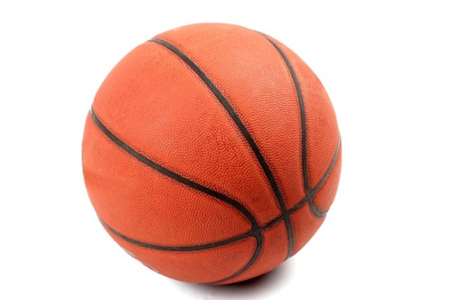

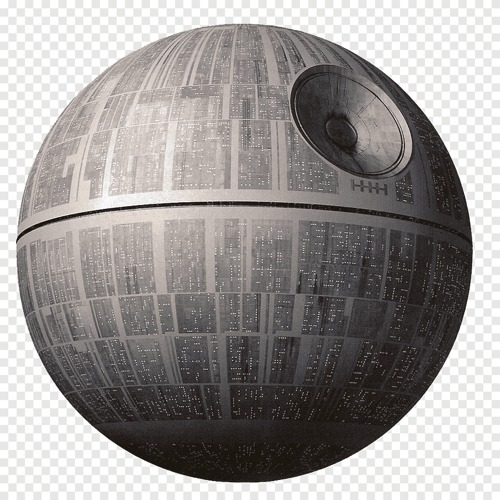

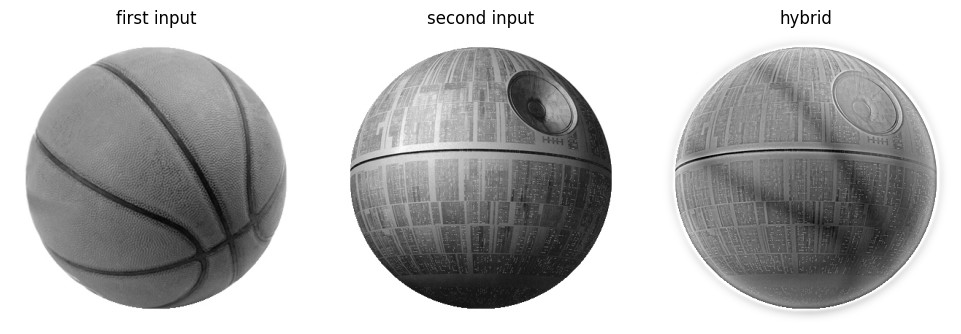
I tested low sigma = 4 and high sigma = 1, low sigma = 8 and high sigma = 3, and low sigma = 12 and high sigma = 5. With 4 and 1, the basketball seams were very noticeable, but the Death Star detail was harder to see. With 12 and 5, the basketball became more blurred and the Death Star became more noticeable. I chose low sigma = 8 and high sigma = 3 since we can see the Death Star’s surface up close and the basketball’s seams farther away. Some basketball seams are still visible up close, so the result is not a complete switch between the two images.

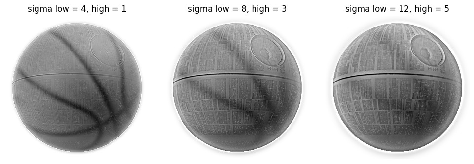


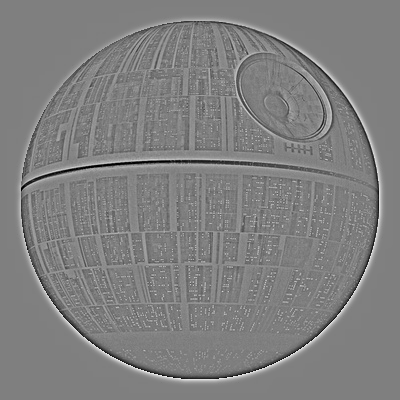

The Fourier transforms are calculated using log(1 + abs(fftshift(fft2(image)))). The center shows the low frequencies, while the frequencies farther from the center are higher frequencies. By blurring the basketball, we reduce its high frequency detail and keep its low frequency structure. By subtracting the blurred Death Star from the original Death Star, we reduce its low frequency structure and keep more of its high frequency detail. The hybrid then contains both of these parts. We use the log since otherwise the strongest values would make the smaller values difficult to see.

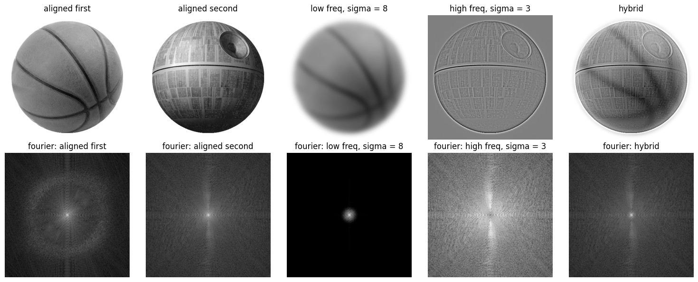
Jason Kelce and Gimli
For Jason Kelce and Gimli, I chose these images since both have large beards and similar positions for their eyes and mouths. I aligned their eyes using the starter code, which shifts, scales, and rotates the images, and then cropped both images to the same area. Kelce supplies the low frequency detail with sigma = 8, and Gimli supplies the high frequency detail with sigma = 3. Up close, we can see the patterns on Gimli's helmet and the fine detail in his beard, while farther away, we can see Kelce's face more clearly. The helmet is still a little visible at a distance, and their beard shapes are different, so some parts of both images remain visible together.

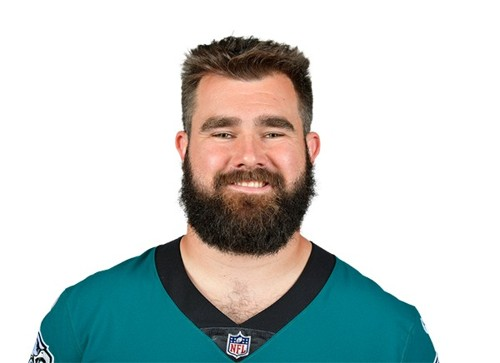

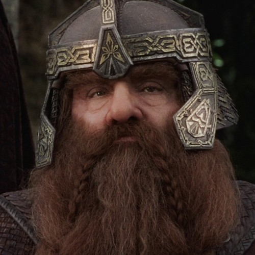

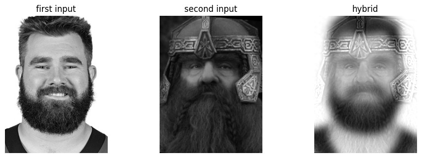
Part 2.3
Gaussian and Laplacian stacks
I constructed Gaussian and Laplacian stacks for the apple and orange images. Every level keeps the same image dimensions since we only blur the image and do not downsample it. Therefore, each pixel stays at the same location across the levels, which allows us to subtract the levels and later blend them together.
The first Gaussian level is the original image. I produce each next level by convolving the previous level with a Gaussian. I used 6 levels, with sigma = 2, 4, 8, 16, and 32 for the successive blurs. As we go through the stack, the image becomes more blurred since we are removing more of the high frequency detail.
I constructed the Laplacian levels by subtracting neighboring Gaussian levels, so L[i] = G[i] - G[i + 1]. This gives us the detail that was removed between those two levels. The earlier levels contain finer detail, while the later levels contain broader changes in intensity. I kept the final coarse Gaussian as the last Laplacian level since the differences alone would not contain the remaining low frequency information.
When we sum the Laplacian levels, the neighboring Gaussian terms cancel out, and adding the final Gaussian gives us the original image again. Our results reconstruct the original apart from tiny floating point differences.

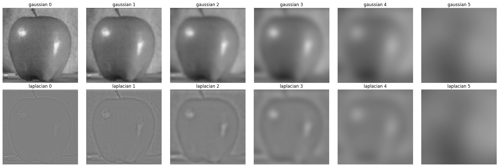

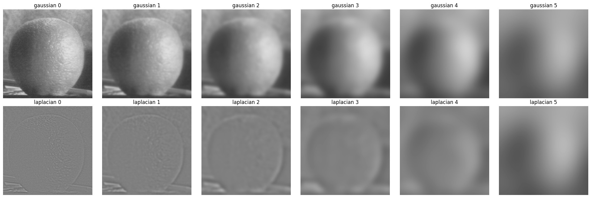

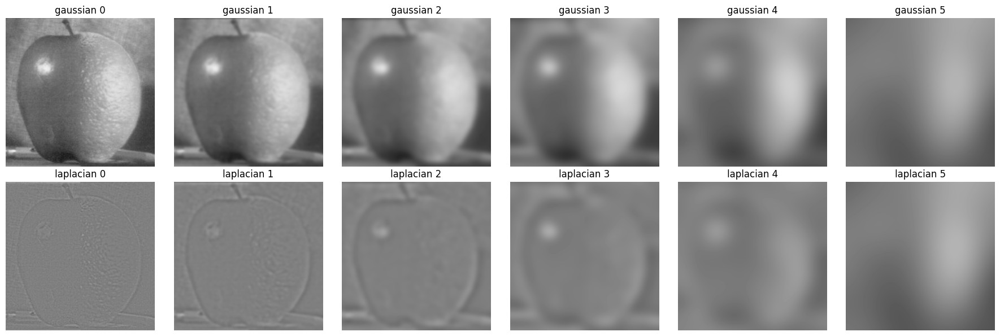
Part 2.4
Multiresolution blending
I constructed a Gaussian stack for the mask using the same idea as in 2.3. The first level is the original mask, and each next level is created by blurring the previous level with a Gaussian. The white parts of the mask select the first image, and the black parts select the second image. As we blur the mask, the border becomes smoother and the values around it become a mix between 0 and 1.
At each level, we multiply the first image’s Laplacian level by the corresponding mask level and the second image’s Laplacian level by 1 minus that mask level. Therefore, the blended level becomes M[i] * L1[i] + (1 - M[i]) * L2[i], where the multiplication is done at each pixel. We then sum all the blended levels, including the final coarse level, to reconstruct the final image.
This gives a smoother transition than a hard cut since we blend the different frequency levels with different amounts of mask smoothing. The fine detail uses a sharper mask, while the broader intensity changes use a more blurred mask. Therefore, we can keep the detail around the border while making the larger changes in intensity less sudden.
Oraple
For the oraple, I used a mask that selects the apple on the left and the orange on the right. I used 6 stack levels, and the result has a smoother transition between the two fruits than simply cutting and joining the images.

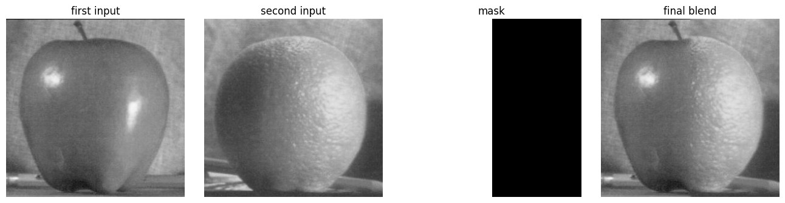


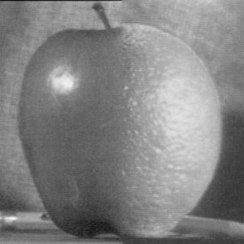

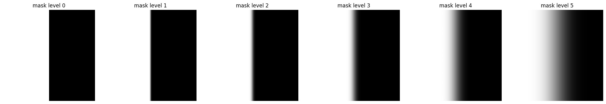

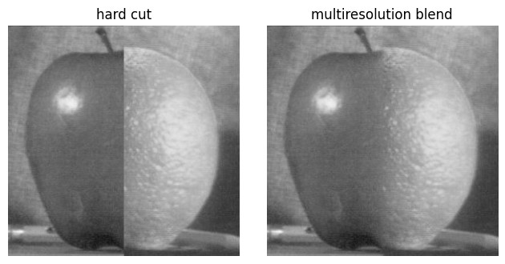

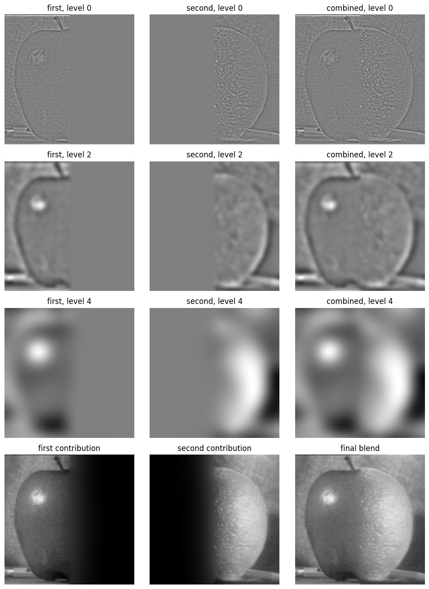
Curry and the Dragon Ball
For the custom blends, I resized the Dragon Ball to fit over Curry’s basketball and positioned it in the same area. I also resized the blue shell and positioned it over the football in Josh Allen’s hand. These positioned images were saved as inputs before blending. I used 3 stack levels for both results. The irregular masks follow the objects’ shapes, including the blue shell’s spikes, and leave out the areas covering the players’ hands so the hands come from the original photos.

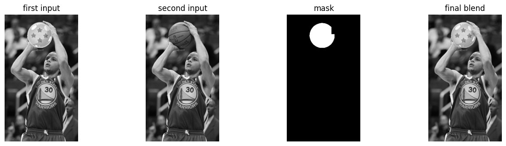

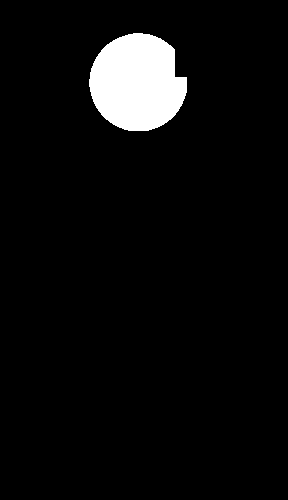

I used the Curry result as my favorite blending example. The process below shows the Dragon Ball’s masked levels, the original photo’s masked levels, and their sums. The bottom row shows each image’s reconstructed contribution and the final blend.

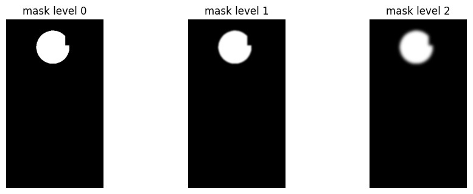

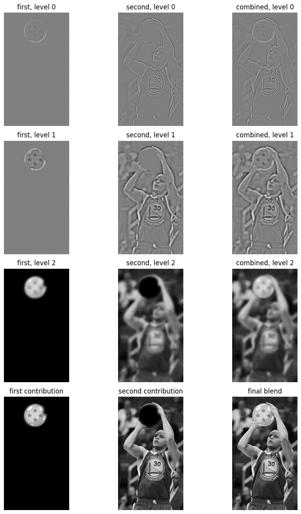
Josh Allen and the blue shell

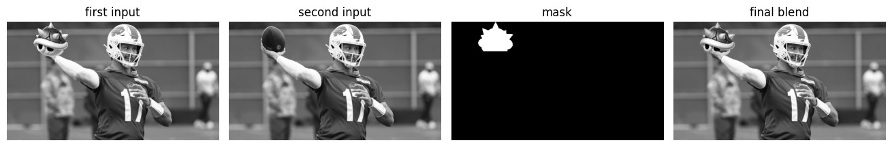

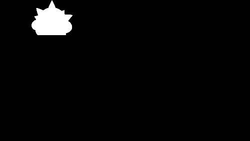

Reflection
What I learned
The most important thing I learned from this project is that an image contains both high frequency and low frequency information, and we can use these parts separately to create different effects. I thought it was cool that we could take advantage of how our eyes see detail up close and broader shapes farther away to create these illusions. By combining the high frequency detail of one image with the low frequency detail of another image, the result can look like one image up close and a different image farther away. This helped me understand how the different frequencies in an image affect what we see.